Large trees up to 60 m tall.
60 ಮೀ. ಎತ್ತರದವರೆಗೆ ಬೆಳೆಯುವ ದೊಡ್ಡಗಾತ್ರದ ಮರಗಳು.
60 മീറ്റര് വരെ ഉയരത്തില് വളരുന്ന വന്മരങ്ങള്.
பெரிய மரம் 60 மீ. உயரம் வரை வளரக்கூடியது
Bark smooth, grey; blaze brown.
ತೊಗಟೆ ನಯವಾಗಿದ್ದುಬೂದು ಬಣ್ಣ ಹೊಂದಿರುತ್ತದೆ; ಕಚ್ಚು ಮಾಡಿದ ಜಾಗ ಕಂದು ಬಣ್ಣದಲ್ಲಿರುತ್ತದೆ.
നരച്ചനിറത്തിലുളളതും, മിനുസമാര്ന്നതുമായ പുറംതൊലി; വെട്ടുപാടിന് തവിട്ട് നിറം.
மரத்தின் பட்டை வழுவழுப்பானது, பழுப்பு நிறம்; பட்டையின் உட்புறம் பளபளப்பாக அரக்கு நிறம்.
Branchlets terete, glabrous with annular scars formed by fallen stipules; young branchlets stellate pubescent.
ಕಿರುಕೊಂಬೆಗಳು ದುಂಡಾಗಿದ್ದು,ರೋಮರಹಿತವಾಗಿರುತ್ತವೆ ಹಾಗೂ ಉದುರಿದ ಕಾವಿನೆಲೆಗಳಿಂದುಂಟಾದ ವಲಯಾಕಾರದ ಗುರುತುಗಳಿಂದ ಕೂಡಿರುತ್ತವೆ;ಕಿರುಕೊಂಬೆಗಳು ನಕ್ಷತ್ರಾಕಾರದ ಮೃದು ತುಪ್ಪಳದಿಂದ ಕೂಡಿರುತ್ತದೆ.
അടര്ന്നുവീണ അനുപര്ണ്ണങ്ങളുടെ, അടയാളങ്ങളോടുകൂടിയ, ഉപശാഖകള് ഉരുണ്ടതാണ്; ഇളം ഉപശാഖകള് നക്ഷത്രാകാര രോമങ്ങള് നിറഞ്ഞതാണ്.
சிறுநுனிக்கிளைகள், குறுக்குவெட்டுத் தோற்றத்தில் வளையமானது, உரோமங்களற்றது, இலையடிச்செதில் உதிர்ந்ததால் உண்டாகும் வட்டவடுக்களுடையது; சிறு நுனிக்கிளைகள் நட்சத்திர வடிவ உரோமங்களுடையது.
Leaves simple, alternate, spiral and clustered at twig ends; stipules in younger stages lanceolate, to 5.5 cm long, densely stellate tomentose; petiole to 3 cm long, slightly swollen at base, stellate pubescent in young trees; lamina in mature trees 8-12 x 4-6 cm elliptic or narrow ovate, apex acute or slightly acuminate, base rounded, margin entire, subcoriaceous, glabrous; midrib slightly canaliculate above; secondary_nerves straight, nearly parallel; tertiary_nerves obliquely_percurrent.
ಎಲೆಗಳು ಸರಳವಾಗಿದ್ದು, ಪರ್ಯಾಯ ಹಾಗೂ ಸುತ್ತು ಜೋಡನಾ ವ್ಯವಸ್ಥೆಯಲ್ಲಿರುತ್ತವೆ ಮತ್ತು ಕುಡಿಕೊಂಬೆಗಳ ತುದಿಯಲ್ಲಿ ಗುಂಪಾಗಿರುತ್ತವೆ;ಕಾವಿನೆಲೆಗಳು ಎಳೆಯದಾಗಿದ್ದಾಗ ಭರ್ಜಿಯಾಕಾರದಲ್ಲಿದ್ದು,5.5 ಸೆಂ.ಮೀ. ಉದ್ದವಿದ್ದು ದಟ್ಟವಾದ ನಕ್ಷತ್ರಾಕಾರದ ಮೃದು ತುಪ್ಪಳದಿಂದ ಕೂಡಿರುತ್ತವೆ;ಎಲೆತೊಟ್ಟುಗಳು 3 ಸೆಂ.ಮೀ. ವರೆಗಿನ ಉದ್ದ ಹೊಂದಿದ್ದು ಬುಡಭಾಗದಲ್ಲಿ ಕೊಂಚ ಉಬ್ಬಿರುತ್ತವೆ, ಎಳೆಯ ಮರಗಳಲ್ಲಿ ಕಾವಿನೆಲೆಗಳು ನಕ್ಷತ್ರಾಕಾರದ ಮೃದು ತುಪ್ಪಳದಿಂದ ಕೂಡಿರುತ್ತವೆ; ಬಲಿತ ಮರಗಳಲ್ಲಿ ಪತ್ರಗಳು 8-12 X 4-6 ಸೆಂ.ಮೀ. ಗಾತ್ರ,ಅಂಡವೃತ್ತಾಕಾರ ಅಥವಾ ಸಂಕುಚಿತ ಅಂಡಾಕಾರದ ಆಕಾರ ,ಚೂಪಾದ ಅಥವಾ ತುಸುವಾಗಿ ಕ್ರಮೇಣವಾಗಿ ಚೂಪಾಗುವ ತುದಿ, ದುಂಡಾದ ಬುಡ,ನಯವಾದ ಅಂಚು,ಉಪ-ತೊಗಲನ್ನೋಲುವ ಮೇಲ್ಮೈ ಹೊಂದಿದ್ದು ರೋಮರಹಿತವಾಗಿರುತ್ತವೆ; ಎರಡನೇ ದರ್ಜೆಯ ನಾಳಗಳು ನೆಟ್ಟಗಿದ್ದು ಹೆಚ್ಚೂ ಕಡಿಮೆ ಸಮಾನಾಂತರವಾಗಿರುತ್ತವೆ; ಮೂರನೇ ದರ್ಜೆಯ ನಾಳಗಳು ಓರೆಯಾಗಿದ್ದು ಎಲೆ ದಿಂಡಿಗೆ ಅಡ್ಡವಾಗಿ ಕೂಡುವಂತಹವು.
ലഘുവായ ഇലകള് ഏകാന്തരമായി, സര്പ്പിളാകൃതിയില്, തണ്ടുകളുടെ അറ്റത്ത് കൂട്ടമായി ക്രമീകരിച്ചവയാണ്; അനുപര്ണ്ണങ്ങള് ഇളതായിരിക്കുമ്പോള് കുന്താകൃതിയാണ്, 5.5 സെ.മീ വരെ നീളം, കനത്തില് നക്ഷത്രാകാര രോമങ്ങള് നിറഞ്ഞതാണ്; ഇലഞെട്ടിന് 3 സെ.മീ വരെ നീളം, കീഴറ്റം ചെറുതായി വീര്ത്തതാണ്, ഇളം മരങ്ങളില് നക്ഷത്രാകാര രോമങ്ങള് നിറഞ്ഞതാണ്; മൂത്തമരങ്ങളിലെ പത്രഫലകത്തിന് 8 മുതല് 12 വരെ സെ.മീ നീളവും 4 മുതല് 6 സെ.മീ വരെ വീതിയും, ദീര്ഘവൃത്താകാരമോ വീതികുറഞ്ഞ അണ്ടാകാരമോ ആണ്, പത്രാഗ്രം കൂര്ത്തതോ ചെറുതായി ദീര്ഘാഗ്രമോ ആണ്, പത്രാധാരം വൃത്താകാരത്തിലാണ്, അരികുകള് അവിഭജിതമാണ്, ഉപചര്മ്മില പ്രകൃതം, അരോമിലം; ദ്വീതീയ ഞരമ്പുകള് നേരെയുളളതും ഏതാണ്ട് സമാന്തരവുമാണ്; ത്രിതീയഞരമ്പുകള് പെര്കറന്റും ചരിഞ്ഞതുമാണ്.
இலைகள் தனித்தவை, மாற்றுஅடுக்கமானவை, சுழல் அமைப்புடையது, மற்றும் கொத்தாக இலைகள் நுனிக்கிளைகளில் காணப்படும்; இலையடிச்செதில்கள் ஈட்டி வடிவமுடையது, 5.5 செ.மீ. வரை நீளமுடையது, தளப்பகுதியில் தடித்தது, மரக்கன்றில் நட்சத்திர வடிவ உரோமங்கள் காணப்படும்; முதிர்ந்த இலைகள் 8-12 X 4-6 செ.மீ., நீள்வட்டம் அல்லது குறுகிய முட்டை வடிவம், அலகின் நுனி கூரியது அல்லது சிறிது வால் போன்று நீண்டது, அலகின் தளம் வட்டமானது, அலகின் விளிம்பு முழுமையானது, சப்கோரியேசியஸ், உரோமங்களற்றது; மையநரம்பு மேற்புறத்தில் அலகின் பரப்பைவிட சிறிது பள்ளமானது; இரண்டாம் நிலை நரம்புகள் நேரானது, கிட்டதட்ட இணையானது; மூன்றாம் நிலை நரம்புகள் பெர்க்கரண்ட், வளைவானது.
Inflorescence 3-8 flowered racemes, axillary; flowers white, fragrant.
ಪುಷ್ಪಮಂಜರಿಗಳು 3 ರಿಂದ 8 ಹೂಗಳಿರುವ ಅಕ್ಷಾಕಂಕುಳಿನಲ್ಲಿರುವ ಮಧ್ಯಾಭಿಸರ ಮಾದರಿಯವು;ಹೂಗಳು ಬಿಳಿ ಬಣ್ಣದವುಗಳಾಗಿದ್ದು ಸುವಾಸನಾಯುಕ್ತವಾಗಿರುತ್ತವೆ.
പൂങ്കുലകള് 3 മുതല് 8 വരെ പൂക്കളുളള, കക്ഷീയ റസീമുകളാണ്; പൂക്കള് വെളുത്തതും സുഗന്ധമുളളവയുമാണ്.
மஞ்சரி, 3-8 மலர்கள் கொண்ட ரெசீம், இலைக்கோணங்களில் காணப்படுபவை; மலர்கள் வெண்நிறமுடையது, நறுமணம் மிகுந்தது.
Nut, covered by smooth calyx tubes with 3 short and 2 accrescent_calyx_lobes; seeds 1-2.
ಕಾಯಿಗಳು ಕರಟ ಮಾದರಿಯವು ಹಾಗೂ ನಯವಾದ, ವೃದ್ಧಿಸಿದ 3 ಕಿರಿದಾದ ಹಾಗೂ 2 ದೊಡ್ಡದಾದ ಪುಷ್ಪಪಾತ್ರೆಯ ನಾಳಗಳಿಂದ ಆವೃತವಾಗಿರುತ್ತವೆ; ಬೀಜಗಳು 1 ರಿಂದ 2.
3 ചെറുതും 2 വലുതുമായ വീര്ത്ത വിദളങ്ങളോടുകൂടിയ വിദള കുഴലിന്നാല് ആവണം ചെയ്യപ്പെട്ട കായ, നട്ട് ആണ്; ഒന്നോ രണ്ടോ വിത്തുകള്.
உலர்கனி (நட்), வழுவழுப்பான புல்லி இதழ் குழாய்களினால் சூழப்பட்டுள்ளது மற்றும் நிரந்தரமான மூன்று சிறிய அல்லி இதழ்கள் மற்றும் 2 பெரிய புல்லி இதழ்கள் கொண்டவை, 1-2 விதைகளை கொண்டது.
 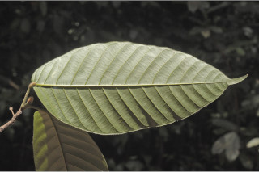
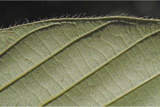
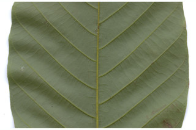
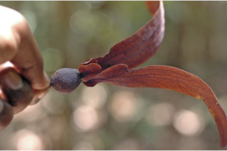
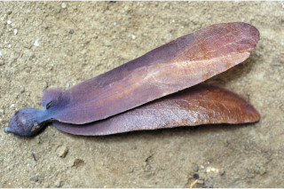
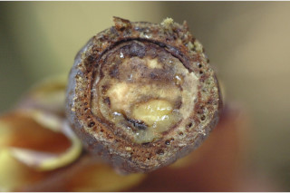
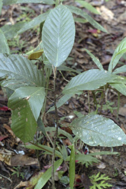
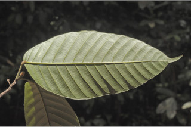
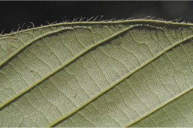
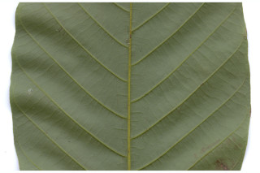
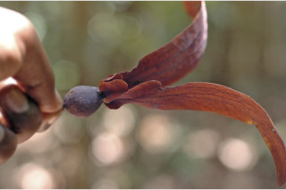
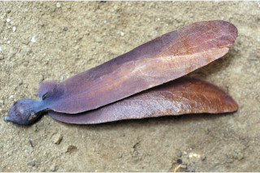
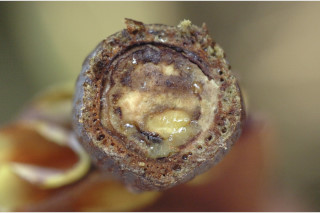
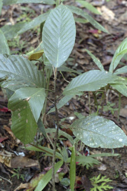